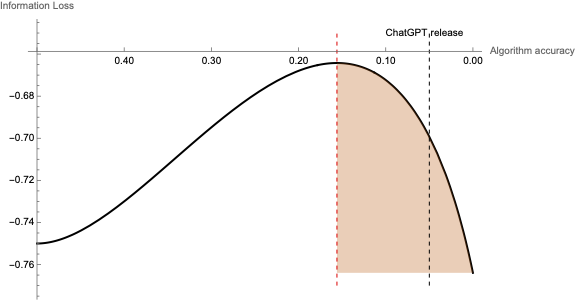
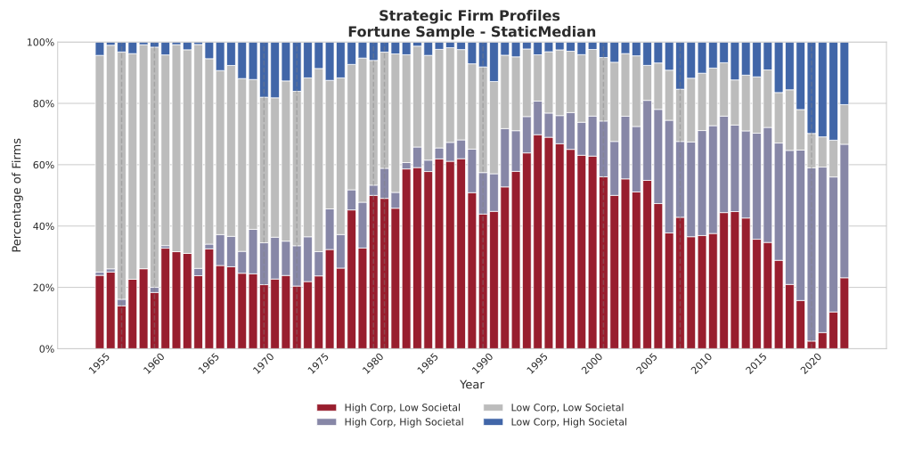
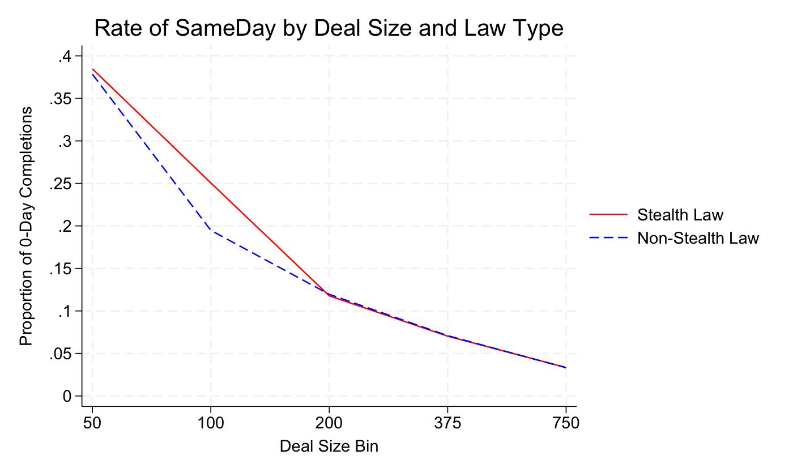

Research
Better AI, Worse Disclosures? The Unintended Consequences of NLP on Financial Reporting
This paper studies how the growing use of algorithms to read and produce corporate disclosure can ultimately degrade disclosure quality. I develop a model in which a manager chooses how to disclose information to investors who use natural language processing to interpret reports. When both sides adopt increasingly sophisticated language tools, an arms race emerges that can reduce the informativeness of corporate communication.

What Purpose Do Corporations Purport? Evidence from Letters to Shareholders
Using natural language processing, we identify corporate goals stated in the shareholder letters of the 150 largest companies in the United States from 1955 to 2020. We document a shift from shareholder-centric to stakeholder-oriented language and examine what drives changes in stated corporate purpose over time.

Stealth Law: Legal Intermediaries and Antitrust Enforcement
We propose that lawyers serve as a mechanism through which M&A firms seek to avoid antitrust scrutiny. We study the role of legal advisors in helping acquirers structure transactions to stay below regulatory review thresholds and examine the consequences for merger enforcement.
